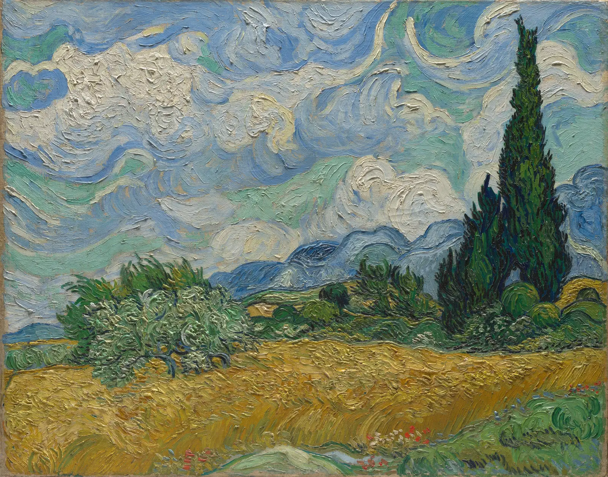

"고흐의 노랑", "페르메이르의 파랑"이라는 말을 듣는다. 그런데 막상 그 그림 앞에 서면 노랑이나 파랑은 화면의 일부일 뿐이고, 대부분은 회색에 가까운 벽, 흙빛 땅, 탁한 초록이다. 우리가 기억하는 색과 그림이 실제로 쓴 색은 어떻게 다를까. 이 장은 공공 도메인 명작 다섯 점에서 색을 직접 뽑아 비율과 명도와 색상의 짜임을 읽고, 수묵의 농담과 오방색처럼 다른 전통이 색을 다루는 방식도 같은 눈으로 본다. 목표는 명작을 베끼는 것이 아니라, 그 안에서 내 그림에 가져올 원리를 찾는 것이다.
k-평균 군집으로 그림의 주요 색과 그 비율을 뽑고, 결과를 읽을 때의 함정을 안다.
명작의 색이 명도 구조 위에 놓여 있고, 선명한 색은 작은 면적에 아껴 쓰인다는 것을 숫자로 확인한다.
색상의 분포에서 반대편 색의 짝(보색 대비)을 찾고, 인상주의의 섞지 않은 붓질을 가까이서 본다.
수묵화가 먹 하나의 농담과 여백으로 명도를 짜는 방식을 본다.
오방색을 방위·오행과 묶인 문화적 색 체계로 이해하고, 정해진 하나의 수치가 없다는 점을 안다.
그림의 색을 읽는다는 것
요하네스 페르메이르(Johannes Vermeer, 1632–1675)의 그림 한 점에서 시작한다. 왼쪽 창으로 빛이 들어오는 방에서 한 여인이 창을 열며 다른 손으로 물병을 잡고 있다. 이 그림을 떠올리면 많은 사람이 흰 두건과 짙은 파랑 치마, 물병의 금빛을 먼저 기억한다. 그런데 화면의 넓이를 재 보면 이야기가 달라진다.
그림 1. 요하네스 페르메이르, 「물병을 든 젊은 여인」, 1662년경. 화면의 대부분은 밝은 회백색 벽과 회갈색 그늘이다. 짙은 파랑(치마, 탁자 위 천)과 붉은 양탄자, 금빛 물병은 생각보다 작은 넓이를 차지한다. 오른쪽 위 "흑백" 단추로 보면 창에서 오른쪽 아래로 밝기가 고르게 가라앉는 명도의 흐름이 먼저 보인다.메트로폴리탄 미술관 소장(Marquand Collection, Gift of Henry G. Marquand, 1889), 캔버스에 유채. 공공 도메인(The Met Open Access, CC0). 소장처 작품 페이지 · 크레딧
그림의 색을 "읽는다"는 것은 이런 차이를 확인하는 일이다. 어떤 색이 얼마만큼의 넓이로, 어떤 명도에, 어떤 색 옆에 놓였는가. 화가들은 오래전부터 명작 앞에서 작은 색 견본을 칠해 가며 이 일을 했고, 오늘은 컴퓨터가 수만 개의 화소를 몇 초 만에 세어 준다. 다만 숫자를 읽기 전에 그 숫자가 무엇의 숫자인지부터 분명히 해 둔다.
화면 속 그림의 색은 물감의 색이 아니다
이 장의 숫자는 소장처가 촬영해 공개한 디지털 이미지의 화소 값이다. 그 사이에는 여러 겹의 변화가 있다. 수백 년 동안 누렇게 변한 바니시, 빛에 바래기 쉬운 일부 안료(붉은 레이크 계열 등)의 퇴색, 촬영 조명과 카메라의 화이트밸런스(10장), 이미지 압축, 그리고 지금 보고 있는 화면의 색. 그래서 이 장은 "고흐가 쓴 노랑은 #…이다"라고 말하지 않는다. 같은 조건에서 찍은 한 이미지 안의 상대적인 관계, 곧 비율, 명도의 순서, 색상의 방향을 읽는다. 화면 색은 기기마다 다르다.
주요 색 뽑기: k-평균
그림 한 장에는 수십만 개의 화소가 있고, 거의 같은 색도 조금씩 다르다. 이것을 몇 개의 대표색으로 줄이는 흔한 방법이 k-평균 군집(k-means clustering)이다. 색을 공간 속의 점으로 보고, 가까운 점끼리 k개의 무리로 묶은 뒤 각 무리의 평균을 대표색으로 삼는다. 이 책은 사람이 느끼는 색 차이에 가까운 OKLab 공간에서 묶는다(3장).
그림 2. k-평균의 두 단계. 색 점(작은 원)마다 가장 가까운 대표색(큰 원, k=3)을 정하고(①), 대표색을 자기 무리 점들의 평균 위치로 옮긴다(②). 두 단계를 되풀이하면 대표색이 무리의 중심에 자리 잡는다. 실제로는 명도까지 세 축의 공간에서 계산하고, 시작점은 서로 멀리 떨어진 점을 고르는 방식(k-means++)으로 정한다.
\(x\): 화소의 색(OKLab의 세 값), \(S_j\): \(j\)번째 무리, \(\mu_j\): 그 무리의 대표색. 넓은 면적의 색일수록 합에 많이 들어가므로, k-평균은 넓은 색을 먼저 정확하게 맞춘다. 작은 면적의 색은 k가 커져야 비로소 자기 자리를 얻고, 작으면서 어둡기까지 하면 끝내 다른 무리에 묻히기도 한다.
아래 시뮬레이터는 페르메이르의 그림에서 k개의 색을 뽑고, 그 색만으로 그림을 다시 칠한다. 경계선을 끌어 원본과 비교하고, 슬라이더로 k를 바꾼다.
SIMULATOR
k개의 색으로 다시 칠하기
가장 넓은 색—
가장 선명한 색(넓이)—
평균 재현 오차 ΔEOK×100—
해볼 것: ① k=2에서 시작한다. 그림이 밝은 벽과 어두운 덩어리, 두 명도로 갈린다. 색보다 명도가 먼저 나뉜다. ② k를 하나씩 올리며 치마의 짙은 파랑을 찾아본다. k=12까지 올려도 파랑은 따로 뽑히지 않고 가장 어두운 무리(거의 검정)에 묻힌다. 사진 속 그 파랑은 아주 어두운 색이라 숫자로는 검정 가까이에 있다. ③ k=12에서 재현 오차는 줄지만 새로 생기는 색은 대부분 벽과 그늘의 미세한 회갈색 단계다. 넓이 순위는 "중요한 색"의 순위가 아니고, k-평균은 작고 어두운 색에 약하다. (OKLab k-평균, k-means++ 시작점, 시드 고정. 화소는 가로 240px로 줄인 이미지에서 최대 6,000개를 표본으로 뽑는다. 다시 칠하기는 각 화소를 가장 가까운 대표색으로 바꾼 것이다.)
숫자를 따로 세어 보면 사정이 분명해진다. 이 이미지에서 파랑 쪽 색상(OKLCH 220~290°)에 채도가 조금이라도 있는 화소는 약 8%이고, 그 대부분은 명도 0.2대의 아주 어두운 파랑이다. 채도 0.08을 넘는 "선명한" 화소는 그림 전체에서 0.3%뿐이다. 페르메이르는 그림 대부분을 밝고 조용한 회백색과 회갈색으로 채우고, 파랑과 빨강은 어둡고 작은 조각으로만 두었다. 그런데도 우리는 그 파랑을 또렷이 기억한다. 넓은 따뜻한 회색이 옆에 있어 작은 색 기운이 크게 느껴지기 때문이다(9장). 7장에서 본 "채도 예산", 곧 선명한 색은 아껴 써야 빛난다는 원리가 명작 안에서 숫자로 드러난다. 반대로 말하면, 팔레트 추출 결과의 맨 앞에 오는 색은 대개 배경이고, 그림의 성격을 정하는 색은 띠의 끝에 작게 붙어 있거나 아예 다른 무리에 묻혀 있다. 팔레트 추출은 출발점이지 답이 아니다.
색상의 지도: 반대편의 색
넓이 다음으로 볼 것은 색상의 방향이다. 빈센트 반 고흐(Vincent van Gogh, 1853–1890)는 동생 테오에게 보낸 편지에서 보색과 색의 대비에 대해 자주 썼고, 들라크루아의 색 이론에 관심이 많았다. 생레미 시절의 아래 그림은 그 관심이 화면에서 어떻게 짜였는지 보기 좋은 예다.

그림 3. 빈센트 반 고흐, 「사이프러스가 있는 밀밭」, 1889. 화면 아래 절반의 노랑·황토와 위 절반의 파랑·청록이 색상환의 먼 쪽에서 마주한다. 그 사이를 초록의 덤불과 사이프러스가 잇는다. 흑백으로 보면 밀밭과 하늘은 둘 다 밝은 중간 명도라서, 둘을 가르는 일은 명도보다 색상이 맡고 있다.메트로폴리탄 미술관 소장(Purchase, The Annenberg Foundation Gift, 1993), 캔버스에 유채. 공공 도메인(The Met Open Access, CC0). 소장처 작품 페이지 · 크레딧
아래 시뮬레이터는 그림의 모든 화소를 색상환 위에 뿌린다. 각도는 색상(OKLCH h), 꽃잎의 길이는 그 색상에 얼마나 많은, 얼마나 선명한 화소가 있는지(채도를 무게로 한 개수)다. 채도가 아주 낮은 화소는 색상이 의미가 없으므로 따로 세어 "무채색 비율"로 보여 준다. 그림을 바꿔 가며 꽃잎의 모양을 비교한다.
SIMULATOR
그림의 색상 꽃잎
무채색 비율—
가장 큰 꽃잎—
그 맞은편(±60°)의 몫—
해볼 것: ① 고흐에서 노랑·황토 쪽 꽃잎이 가장 길고, 맞은편 파랑·청록 쪽에도 꽃잎이 넓게 펼쳐진다. 그 사이 초록에도 꽃잎이 있다. 반대편의 두 색과 그 사이를 잇는 색이 화면을 나눠 갖는 모양이다. ② 페르메이르로 바꾼다. 무채색 비율이 60%로 올라가고, 꽃잎은 노랑·황토 쪽에 몰린 가운데 맞은편 파랑 쪽에도 꽃잎이 남는다. 화소 수는 적어도 채도를 무게로 세기 때문이다. ③ 피사로 「루앙」에서는 거꾸로 하늘의 파랑이 가장 큰 꽃잎이고, 햇빛 받은 건물의 살구색이 맞은편을 채운다. ④ 평사낙안(수묵화)과 금계도로 바꾼다. 꽃잎이 바탕 비단·종이의 누런 색상 한쪽에 몰리고 맞은편은 거의 비어 있다. 기준 채도를 올리고 내리며 결과가 얼마나 흔들리는지도 본다. (각 그림을 가로 200px로 줄여 모든 화소를 센다. 꽃잎은 10° 간격, 길이는 채도를 무게로 더한 값을 그림마다 가장 큰 꽃잎에 맞춰 늘린 것이다. 꽃잎 색은 그 색상의 견본일 뿐 그림의 실제 색이 아니다.)그림 출처: 페르메이르(그림 1), 고흐(그림 3), 피사로 「루앙 에피스리 거리」(10장 그림 4), 「금계도」와 「평사낙안」(아래 시뮬레이터의 설명). 모두 메트로폴리탄 미술관 소장, 공공 도메인(The Met Open Access, CC0). 크레딧
꽃잎의 모양은 그림이 색상을 다루는 전략을 요약한다. 고흐의 꽃잎은 노랑에서 초록, 청록, 파랑까지 부채처럼 넓게 펼쳐지고, 무채색은 3분의 1 정도뿐이다. 노랑 들판과 파랑 하늘이라는 먼 두 색을 초록이 잇는다. 페르메이르는 화소의 60%가 무채색이고, 색이 있는 화소도 대부분 따뜻한 노랑·황토 쪽 한 방향에 모여 있으며, 맞은편의 파랑은 작고 어둡다. 둘 다 반대편 색의 짝, 곧 보색 대비(Complementary contrast)를 쓰지만 넓이의 배분이 다르다. 넓게 맞세우면 화면 전체가 진동하고, 작게 박으면 한 점이 빛난다(8장). 어느 쪽이 옳은 것이 아니라, 그림이 무엇을 전하려는가에 따라 고른 배분이다.
인상주의: 섞지 않은 색
인상주의 화가들의 그림은 멀리서 보면 회색 거리이고, 가까이서 보면 분홍, 하늘색, 연두, 살구색의 짧은 붓질 모음이다. 팔레트에서 섞어 회색을 만드는 대신, 서로 다른 색의 붓질을 나란히 놓아 눈에서 섞이게 한 것이다(1장의 병치 혼합). 이런 방식을 흔히 분할된 색(Broken color)이라고 부른다. 10장에서 본 카미유 피사로의 「루앙 에피스리 거리(햇빛 효과)」에서 그 붓질을 가까이 본다. 아래 돋보기 안의 화소를 하나하나 OKLab의 a–b 평면(가로 초록↔빨강, 세로 파랑↔노랑)에 점으로 찍는다. 점이 가운데에 몰리면 정말 회색이고, 사방으로 흩어져 있는데 평균만 가운데라면 "색들이 모여 만든 회색"이다.
SIMULATOR
돋보기: 회색 속의 붓질
돋보기를 끈다
돋보기 안 평균색—
화소 하나하나의 평균 채도 → 평균색의 채도—
따뜻한 화소 · 차가운 화소—
해볼 것: ① 처음 자리는 골목 왼쪽 집들의 회청색 지붕이다. 평균색은 거의 완전한 회색인데, 점들은 노랑·분홍 쪽과 파랑·보라 쪽으로 흩어져 있다. 화소 하나하나의 평균 채도가 평균색의 채도보다 몇 배 크다. ② 오른쪽의 햇빛 받은 건물 정면으로 옮긴다. 점 구름 전체가 노랑·분홍 쪽으로 옮겨 가고 따뜻한 화소가 늘어난다. 그래도 파랑 쪽 점이 남아 있다(10장의 하늘빛). ③ 고흐로 바꾼다. 점 구름이 훨씬 넓게 퍼지고, 평균을 내도 채도가 남는다. 같은 "섞지 않기"라도 고흐는 대비를, 피사로는 회색 속의 떨림을 만든다. (돋보기 안의 화소를 1600px 이미지에서 읽는다. 점은 그중 최대 700개 표본. 평균색은 선형광 평균. 채도 0.03이 넘는 화소 중 노랑·빨강 쪽을 따뜻한 화소, 파랑 쪽을 차가운 화소로 셌다. 이미지 압축과 캔버스 표면의 결도 작은 색 잡음을 보탠다.)그림: 카미유 피사로, 「루앙 에피스리 거리(햇빛 효과)」, 1898(그림 정보는 10장 그림 4). 메트로폴리탄 미술관 소장, 공공 도메인(The Met Open Access, CC0). 소장처 작품 페이지 · 크레딧
회청색 지붕의 점들은 사방으로 흩어져 있는데, 그 평균은 회색이다. 피사로의 회색은 "탁한 회색 물감"이 아니라 "서로 다른 색들의 균형"이다. 이 차이는 멀리서는 거의 안 보이지만, 그림 앞을 걸어 다니면 회색이 살아 떨리는 느낌으로 남는다. 같은 회색을 팔레트에서 섞어 한 번에 칠하면 이 떨림이 없다.
수채화에서 "섞지 않고 나란히"
수채화는 유화처럼 두꺼운 붓질을 나란히 쌓기 어렵지만, 같은 원리를 쓰는 방법이 있다. 하나는 마른 종이 위에 작은 붓질을 겹치지 않게 나란히 두는 것이다. 다른 하나는 첫 색이 완전히 마른 뒤 다른 색을 얇게 덮는 글레이징(Glazing)인데, 이것은 병치가 아니라 셀로판을 겹친 것처럼 빛을 거르는 혼합이라 결과가 다르다. 회색 그늘을 칠할 때 페인즈 그레이 한 가지 대신 파랑과 번트 시에나를 젖은 종이 위에서 반쯤만 섞이게 두면, 멀리서는 회색이고 가까이서는 두 색이 갈라져 보이는 회색을 얻는다. 어디까지 섞을지는 1장에서처럼 "그 자리가 가까이서 보일 것인가"로 정한다.
수묵: 먹 하나의 다섯 색
동아시아의 수묵화는 먹 하나로 그린다. 그런데도 수묵화를 "색이 없는 그림"이라고 부르지 않는다. 당나라의 장언원(張彥遠)이 『역대명화기』에서 먹을 잘 운용하면 다섯 가지 색이 갖추어진다는 뜻의 말을 남긴 뒤로, "먹에 다섯 색이 있다(墨分五彩)"는 표현이 화론에서 오래 쓰였다. 여기서 "색"은 색상이 아니라 먹의 짙고 옅음, 곧 농담(濃淡, Ink tonality)이다. 다섯 단계의 이름은 책마다 조금씩 다르지만, 흔히 가장 짙은 초묵(焦墨)부터 농묵(濃墨), 중묵(重墨), 담묵(淡墨), 가장 옅은 청묵(淸墨)으로 나눈다.
아래는 조선 전기(15세기 말~16세기 초)의 이름 모를 화가가 비단에 먹으로 그린 「평사낙안」이다. 물가 모래톱으로 기러기가 내려앉는 풍경으로, 중국에서 시작된 "소상팔경"의 한 장면을 그린 것이다. 그림의 명도를 다섯 단으로 나누고, 단을 하나씩 골라 그 농담이 화면의 어디에 있는지 본다.
SIMULATOR
먹의 다섯 단계와 여백
이 단의 명도 L* 범위—
이 단의 넓이—
이 단의 평균색—
해볼 것: ① 초묵과 농묵을 차례로 고른다. 가장 짙은 먹은 앞쪽 물가의 바위와 소나무, 기러기에만 아주 작게 쓰였다. ② 담묵과 청묵·여백을 고른다. 화면의 대부분은 옅은 먹과 아무것도 칠하지 않은 비단 바탕이고, 먼 산과 물안개가 그 안에서 거의 경계 없이 녹아 있다. ③ "다섯 단을 한꺼번에 칠하기"를 켠다. 짙은 먹이 아래 앞쪽에, 옅은 먹이 위 먼 쪽에 놓여 거리감을 만든다. 먹 하나로 공간을 짠 셈이다. (단은 이 그림 화소의 명도 L*를 어두운 쪽 1%와 밝은 쪽 1% 사이에서 다섯 등분한 것이며, 전통적인 다섯 먹의 정의가 아니다. 비단은 세월에 누렇게 변해 원래보다 어둡고 따뜻하다.)그림: 작가 미상, 「평사낙안(Wild geese descending to sandbar)」, 조선 15세기 말~16세기 초, 비단에 먹, 족자. 메트로폴리탄 미술관 소장(Purchase, Harris Brisbane Dick Fund, John M. Crawford Jr. Bequest, and The Vincent Astor Foundation Gift, 1992). 공공 도메인(The Met Open Access, CC0). 소장처 작품 페이지 · 크레딧
수묵화에서 칠하지 않은 바탕, 곧 여백(餘白, Empty space)은 빈 곳이 아니라 물, 안개, 하늘이 되는 한 단계의 "색"이다. 앞 절의 페르메이르가 회백색 벽에 넓은 자리를 준 것과 같은 일을, 수묵화는 아무것도 칠하지 않음으로써 한다. 서양화의 명도 계획(6장)이 "어디를 가장 어둡게 할까"에서 출발한다면, 수묵의 계획은 "어디를 비워 둘까"에서 출발하는 경우가 많다. 둘 다 결국 명도의 단계와 그 넓이를 정하는 일이다.
한 색으로 다섯 단계 칠하기
먹이 없다면 수채 물감 한 가지(울트라마린이나 번트 엄버처럼 어두운 색)로 해도 된다. 종이에 가로 3 cm 칸 다섯 개를 그리고, 물을 점점 많이 타서 가장 짙은 칸부터 가장 옅은 칸까지 칠한다. 마지막 칸은 칠하지 않고 종이 그대로 둔다(여백). 마른 뒤 눈을 가늘게 뜨고 이웃한 칸의 차이가 고르게 보이는지 본다. 대개 짙은 쪽 차이가 작고 옅은 쪽 차이가 크게 나오므로, 고르게 맞을 때까지 다시 칠한다. 그다음 같은 다섯 단계만으로 창밖 풍경이나 컵 하나를 그려 본다.
오방색: 방위와 색의 체계
한국의 전통 색을 말할 때 자주 나오는 말이 오방색(五方色, Five cardinal colors)이다. 청(靑)·적(赤)·황(黃)·백(白)·흑(黑) 다섯 색을 동·남·중앙·서·북의 다섯 방위, 그리고 목·화·토·금·수의 오행과 짝지은 체계로, 동아시아에 널리 퍼진 음양오행 사상에서 나왔다. 그러니 오방색은 "다섯 가지 예쁜 색"이 아니라, 세계를 다섯으로 나누어 이해하던 생각의 틀에 색을 붙인 상징 체계다.
그림 4. 오방색과 방위. 다섯 색은 방위와 오행에 짝지어진다. 칸의 색은 화면에 보여 주기 위해 이 책이 고른 예시값(청 #1f5aa6, 적 #c8232c, 황 #e8b21e, 백 #f4f1e8, 흑 #1d1d1f)이다. 전통 색에는 하나로 정해진 수치가 없다. 같은 "청"도 시대, 지역, 안료와 염료, 쓰인 자리(옷감, 단청, 그림)에 따라 쪽빛에서 녹청까지 넓게 걸친다. 방위 배치는 지도처럼 북을 위에 두고 그린 것이다.
오방색과 그 사이 색(간색)은 궁궐과 절의 단청(丹靑), 아이 옷의 소매를 여러 색 띠로 이은 색동, 혼례와 의례의 물건 등 여러 자리에서 쓰였다. 다만 각 색에 어떤 의미(예를 들어 액막이, 축원)가 붙는지는 문헌과 쓰임에 따라 다르고, 오늘날 흔히 도는 "이 색은 이런 뜻" 목록 중에는 근거가 분명하지 않은 것도 섞여 있다. 색의 문화적 의미는 12장에서 근거의 수준을 따져 가며 다시 다룬다.
이 장에서는 질문을 하나로 좁힌다. 실제 조선 그림의 색은 오방색 "예시값"과 얼마나 같을까. 아래는 19세기 조선의 채색화 「금계도」다. 붉은 해와 붉은 나무 줄기, 금빛 수탉과 암탉, 청록의 바위와 파도가 있다. 오방색 예시값마다 그림에서 그 색에 가장 가까운 화소 3%를 골라, 그 자리와 평균색을 본다.
SIMULATOR
오방색 예시값과 그림 속 색
오방색 예시값—
그림에서 가장 가까운 3% 화소의 평균—
둘의 색차 ΔE2000—
해볼 것: ① 적을 고른다. 표시되는 자리는 붉은 해와 나무 줄기, 닭의 볏이다. 그 평균은 예시값보다 어둡고 갈색 쪽으로 기운 붉은색이다. 다섯 색 중 예시값과 가장 가깝지만 그래도 한눈에 다르다. ② 청을 고른다. 청에 가장 가까운 화소들은 바위와 파도 쪽에 모이지만, 그 평균은 쨍한 파랑이 아니라 회색에 가까운 색이다. 오래된 채색화의 청록은 안료와 세월 때문에 대개 이렇게 가라앉아 있다. ③ 백과 흑을 고른다. 그림의 "흰" 곳은 누렇게 변한 종이 바탕이고, 가장 어두운 곳도 갈색빛 먹이다. 오방색 예시값은 개념을 보여 주는 견본이지, 옛 그림의 색을 재는 자가 아니다. (각 예시값과 OKLab 거리가 가장 가까운 화소 3%를 고르고 그 선형광 평균을 낸다. ΔE2000이 10을 넘으면 한눈에 다른 색이다. 오른쪽 아래 띠는 같은 그림의 k-평균 8색이다.)그림: 작가 미상, 「금계도(Golden Rooster and Hen)」, 조선 19세기, 종이에 먹과 채색, 족자(표구 부분을 잘라 냄). 메트로폴리탄 미술관 소장(Rogers Fund, 1919). 공공 도메인(The Met Open Access, CC0). 소장처 작품 페이지 · 크레딧
예시값과 그림 속 색이 크게 다르다는 것이 실패는 아니다. 그 차이가 오방색의 성격을 알려 준다. 오방색은 처음부터 "몇 번 물감"이 아니라 "동쪽의 색, 봄의 색, 나무의 색"이라는 범주였다. 화가와 장인은 그 범주 안에서 구할 수 있는 안료와 놓일 자리에 맞춰 실제 색을 골랐다. 그래서 오방색을 오늘의 디자인에 가져올 때도, 다섯 개의 hex 값을 그대로 붙이기보다 "다섯 범주가 서로 어떤 관계로 놓이는가"(예를 들어 중앙의 황을 둘러싼 네 색, 밝음과 어둠의 짝인 백과 흑)를 가져오는 편이 원래의 생각에 가깝다.
팔레트 실험실: 두 그림 나란히
지금까지의 도구를 한곳에 모은다. 왼쪽에 그림 하나(A)를 놓고, k개의 주요 색과 그 넓이, 명도 단계를 본다. 오른쪽 아래에는 다른 그림 하나(B)의 팔레트를 함께 놓고, 두 팔레트를 색 공간(OKLab의 a–b 평면) 위에 원으로 겹쳐 그린다. 원의 크기는 넓이, 원 안의 숫자는 명도 L*다(작은 원은 생략). 안쪽 원 세 개는 채도 0.04, 0.08, 0.12다. 보기 방식을 바꿔 원본, k색으로 다시 칠한 그림, 명도 단계 그림을 오간다.
SIMULATOR
두 그림의 팔레트 비교
A의 명도 범위(L* 5~95%)—
A에서 선명한 색(C>0.08)의 넓이—
B의 명도 범위 · 선명한 색 넓이—
두 팔레트의 거리(평균 ΔE2000)—
해볼 것: ① A 페르메이르, B 고흐에서 원들을 본다. 페르메이르의 원은 가운데(무채색) 근처에 크게 모이고 바깥에 작은 원이 한두 개 있다. 고흐의 원은 노랑 쪽과 파랑 쪽으로 넓게 퍼져 있다. 선명한 색의 넓이가 몇 배 차이 나는지 숫자로 비교한다. ② A를 평사낙안으로 바꾸고 "명도 5단"을 본다. 색은 거의 없는데 명도 단계만으로 그림이 온전히 읽힌다. ③ A 피사로 「루앙」과 B 금계도를 비교한다. 피사로는 선명한 색이 거의 없는데(채도 0.08 넘는 화소가 1% 미만) 원들이 하늘의 파랑 쪽과 건물의 살구색 쪽으로 고르게 갈라지고, 금계도는 선명한 색이 몇 퍼센트 있지만 원들이 모두 누런 바탕 쪽에 모이고 붉은색만 따로 떨어져 있다. 같은 "차분한 그림"도 색을 아끼는 방식이 다르다. (OKLab k-평균, 그림마다 가로 200px 이미지에서 최대 6,000화소 표본. 두 팔레트의 거리는 A의 각 색에서 B의 가장 가까운 색까지의 ΔE2000을 넓이로 가중 평균한 값이다. 명도 5단은 그 그림의 L* 1~99% 사이를 다섯 등분했다.)
두 그림을 나란히 놓으면 "이 그림은 따뜻하다", "이 그림은 화려하다" 같은 인상이 어떤 숫자에서 오는지 보인다. 화려해 보이는 그림이 실제로 선명한 색의 넓이가 큰 것인지, 아니면 작은 선명한 색이 넓은 무채색 위에 놓여서 그렇게 보이는 것인지. 차분해 보이는 그림이 색이 없는 것인지, 색은 있지만 명도와 채도를 좁은 범위에 모은 것인지. 이 구분이 남의 그림에서 원리를 가져오는 첫걸음이다.
모작이 아니라 원리를 가져온다
명작의 팔레트를 그대로 옮겨 쓰면 대개 어색하다. 색은 그 그림의 크기, 주제, 빛, 재료 안에서 관계로 맞춰진 것이기 때문이다. 화가들이 명작을 공부할 때 흔히 하는 일은 색 값을 베끼는 것이 아니라 질문을 하나씩 뽑는 것이다. "가장 선명한 색은 화면의 몇 퍼센트인가", "가장 어두운 곳은 어디이고 얼마나 작은가", "그늘은 어느 쪽으로 기울었나", "비워 둔 곳은 어디인가". 그 답 하나를 내 그림의 조건 안에서 다시 적용한다. 공공 도메인 작품은 모사 자체도 자유지만, 내 작품으로 내놓을 때는 무엇을 참고했는지 밝혀 두는 것이 좋은 습관이다.
좋아하는 그림 한 점의 색 다섯 개 손으로 뽑기
좋아하는 그림을 한 점 골라(도록이나 소장처 웹사이트의 공공 도메인 이미지) 옆에 두고, 물감이나 색연필로 그 그림의 "가장 넓은 색" 셋과 "가장 선명한 색" 둘을 엄지손톱만 하게 칠한다. 각 견본 옆에 그 색이 화면의 몇 퍼센트쯤인지 어림해 적는다. 그다음 이 장의 실험실에 비슷한 그림을 넣어 보거나, 직접 찍은 사진을 흑백으로 바꿔 내 어림과 비교한다. 대부분의 사람은 선명한 색의 넓이를 실제보다 크게 어림한다.
서윤의 작업 노트
CASE 서윤작업 노트 · 11장
세 그림, 세 개의 질문
10월 셋째 주 토요일, 서윤은 도경의 작업실에서 노트북을 펴고 이 장의 실험실에 그림을 하나씩 넣었다. 도경은 화면 옆에 오래된 도록을 펼쳐 놓고 "숫자는 네가 읽고, 나는 손으로 칠해 볼게"라며 같은 그림에서 색 다섯 개를 물감으로 뽑았다. 두 사람의 결과를 비교하니, 도경의 견본에서도 선명한 색은 실제 넓이보다 크게 칠해져 있었다. "봐, 화가 눈도 선명한 색은 부풀려 기억해." 서윤은 대신 도경에게 k를 바꾸는 법을 가르쳐 주었다.
두 사람은 수채화 세 점마다 그림 하나와 질문 하나를 짝지었다. 아래 숫자는 이 장의 실험실(k=6)과 시뮬레이터로 이 책의 모델이 계산한 값이다.
서윤의 그림
참고한 그림
뽑은 원리(질문)
이 책의 모델로 잰 값
「창가의 책」
페르메이르, 「물병을 든 젊은 여인」
창에서 드는 빛 하나, 넓고 조용한 중간 명도 위에 선명한 색은 아주 작게
선명한 색(채도 C>0.08) 넓이 0.3%, 명도 범위 L* 8~57
「비 오는 골목」
작가 미상, 「평사낙안」
한 색의 다섯 농담과 여백으로 거리감을 짠다. 가장 짙은 단은 앞쪽에 아주 작게
가장 짙은 단(초묵)의 넓이 4.7%, 가장 옅은 단(청묵·여백) 16.9%
「해 질 녘 서점 앞」
피사로, 「루앙 에피스리 거리(햇빛 효과)」
그늘의 회색을 섞어 만들지 않고, 따뜻한 붓질과 차가운 붓질을 나란히 두어 눈에서 섞이게
회색 지붕 돋보기: 화소 하나하나의 평균 채도 0.026 → 평균색 채도 0.009
「창가의 책」에서 서윤은 처음에 책 표지 다섯 권을 모두 다른 선명한 색으로 칠할 생각이었다. 페르메이르의 숫자를 본 뒤 계획을 바꿨다. 창가의 벽과 책장은 따뜻한 회백색과 회갈색의 넓은 중간 명도로 두고, 선명한 색은 맨 위 책 한 권의 파랑에만 쓴다. 「비 오는 골목」은 먹 대신 기본 3색으로 섞은 회색 한 가지의 다섯 농담으로 밑칠을 하고, 젖은 바닥의 반사는 종이의 흰색을 남겨 표현한다. 「해 질 녘 서점 앞」은 10장에서 정한 푸른 그림자를 한 번에 섞어 칠하지 않고, 파랑과 번트 시에나를 젖은 종이 위에서 반쯤만 섞이게 둔다. 도경은 마지막에 한 줄을 덧붙였다. "남의 그림에서 색을 가져오지 말고, 질문을 가져와."
이 장에서 정한 것세 그림의 참고 원리 하나씩. 「창가의 책」: 선명한 색은 한 군데에만(넓이 몇 퍼센트 이내). 「비 오는 골목」: 한 색 다섯 농담 + 종이 여백. 「해 질 녘 서점 앞」: 그늘은 따뜻한 색과 차가운 색의 나란한 붓질로. 색 값을 베끼지 않고 원리만 가져온다.
아직 남은 문제주인이 "초록은 편안함, 빨강은 구매욕"이라는 말을 꺼냈다. 색의 의미에 대한 이런 말은 얼마나 믿을 수 있는가. 오방색처럼 문화마다 다른 색의 의미는 브랜드에 어떻게 쓰나.
화면 속 그림의 색은 물감의 색이 아니라 촬영·바니시·퇴색·화면을 거친 값이다. 절대값보다 한 이미지 안의 비율, 명도 순서, 색상 방향을 읽는다.
k-평균은 넓은 색부터 맞추므로 팔레트의 앞자리는 대개 배경이다. 그림의 성격을 정하는 작은 색은 k를 키워야 나타나거나 어두운 무리에 묻히기도 한다. 넓이 순위는 중요도 순위가 아니다.
명작은 대개 넓은 무채색·저채도 바탕 위에 선명한 색을 작게 둔다. 보색 대비도 넓게 맞세우느냐(고흐) 작게 박느냐(페르메이르)에 따라 효과가 다르다.
인상주의의 회색은 선명한 붓질들이 눈에서 섞인 회색이다. 평균은 회색이어도 가까이서는 색이 갈라져 떨림을 만든다.
수묵화는 먹 하나의 농담(흔히 다섯 단계)과 칠하지 않은 여백으로 명도와 공간을 짠다. 여백도 한 단계의 색이다.
오방색은 방위·오행과 묶인 문화적 상징 체계다. 정해진 하나의 수치가 없고, 실제 그림 속 색은 예시값과 크게 다를 수 있다. 가져올 것은 hex 값보다 범주 사이의 관계다.
확인 퀴즈
1. 페르메이르의 그림에서 k를 5에서 12까지 올리며 주요 색을 뽑았더니 회백색과 회갈색 단계만 늘고, 기억 속의 짙은 파랑은 끝내 따로 나오지 않았다. 가장 알맞은 해석은?
k-평균은 각 화소와 대표색 사이 거리의 제곱합을 줄이므로 넓은 색을 먼저 맞춘다. 작고 어두운 색은 가까운 어두운 무리에 묻히기 쉽다. 이 이미지에서 파랑 쪽 화소는 약 8%, 그것도 대부분 아주 어두운 파랑이다. 페르메이르가 파랑을 작고 어둡게 아껴 쓴 것이 그 그림의 전략이다. 퇴색 가능성은 일반적인 주의 사항이지만 이 현상의 설명은 아니다.
2. 피사로의 그림에서 회색으로 보이는 지붕을 확대하니 노랑·분홍 쪽과 파랑·보라 쪽의 작은 붓질이 섞여 있었다. 이 방식에 대한 설명으로 옳은 것은?
인상주의의 분할된 색은 붓질을 섞지 않고 나란히 둔다. 멀리서는 빛의 평균(병치 혼합)으로 회색에 가깝게 보이고, 가까이서는 각 붓질의 색이 살아 있다. 팔레트에서 섞은 회색에는 이 떨림이 없다.
3. 오방색에 대한 설명으로 가장 알맞은 것은?
오방색은 음양오행 사상에서 나온 방위와 색의 짝이다(청-동, 적-남, 황-중앙, 백-서, 흑-북). 실제 색은 시대·재료·쓰임에 따라 넓게 달랐다. 이 책의 ART.OBANG 값도 화면용 예시일 뿐이다.
4. 수묵화의 "먹에 다섯 색이 있다(墨分五彩)"는 말에서 "색"이 가리키는 것으로 가장 알맞은 것은?
수묵의 "다섯 색"은 색상이 아니라 농담이다. 흔히 초묵·농묵·중묵·담묵·청묵으로 나누지만 이름과 수는 책마다 다르다. 여백은 물·안개·하늘이 되는 가장 밝은 단계로 쓰인다.